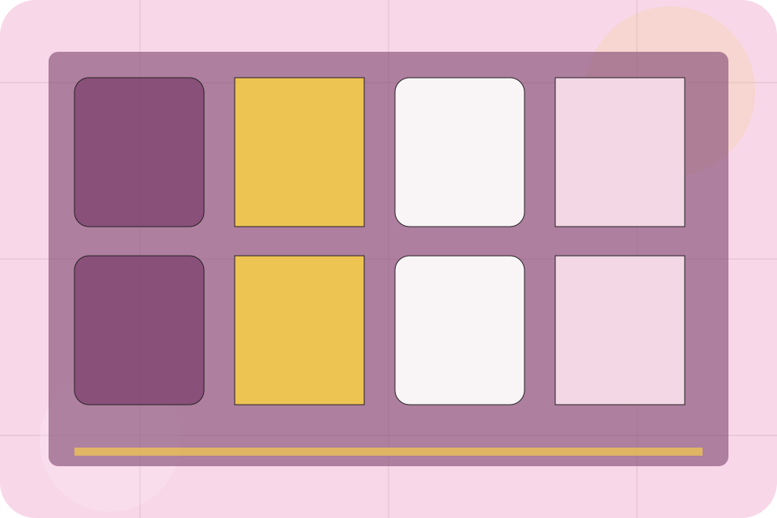
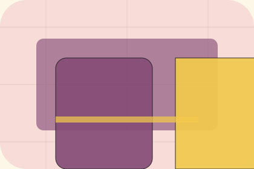

FAQ / 01
FAQ by Table
FAQ shaped for restaurants, cafes & food service decisions.
FAQ opens as a clear restaurants decision hub: what Table offers, who it helps, why it matters, and which route to take first.
The first screen combines positioning, proof, primary action, and fast internal navigation, so people can act immediately or compare the rest of the faq route with context.
Check availabilityPlan the visitReserve with context

FAQ / 02
Questions before you reserve a table
Allergens handles buying doubts directly so visitors can understand timing, fit, limits, and the safest next step.
Answers are short by design: enough to remove hesitation, not so much that the page turns into documentation before the visitor can act.
Explore FAQFAQ / 03
Questions before you reserve a table
Parking handles buying doubts directly so visitors can understand timing, fit, limits, and the safest next step.
Answers are short by design: enough to remove hesitation, not so much that the page turns into documentation before the visitor can act.
Explore FAQQuestion
Parking gives the page a specific angle instead of repeating the navigation label.
Answer
The ornate menu cards show what to compare, what to avoid, and what matters most for restaurants, cafes & food service visitors.
Next Step
The final cue points to a useful internal route so the section keeps the journey moving.
FAQ / 04
Questions before you reserve a table
Children handles buying doubts directly so visitors can understand timing, fit, limits, and the safest next step.
Answers are short by design: enough to remove hesitation, not so much that the page turns into documentation before the visitor can act.
Explore FAQQuestion
Children gives the page a specific angle instead of repeating the navigation label.
Answer
The ornate menu cards show what to compare, what to avoid, and what matters most for restaurants, cafes & food service visitors.
Next Step
The final cue points to a useful internal route so the section keeps the journey moving.
FAQ / 05
Questions before you reserve a table
Groups handles buying doubts directly so visitors can understand timing, fit, limits, and the safest next step.
Answers are short by design: enough to remove hesitation, not so much that the page turns into documentation before the visitor can act.
Explore FAQFAQ / 06
Questions before you reserve a table
Reservations handles buying doubts directly so visitors can understand timing, fit, limits, and the safest next step.
Answers are short by design: enough to remove hesitation, not so much that the page turns into documentation before the visitor can act.
Explore FAQ
Question
Reservations gives the page a specific angle instead of repeating the navigation label.
Answer
The ornate menu cards show what to compare, what to avoid, and what matters most for restaurants, cafes & food service visitors.

Next Step
The final cue points to a useful internal route so the section keeps the journey moving.
FAQ / 07
Questions before you reserve a table
Delivery handles buying doubts directly so visitors can understand timing, fit, limits, and the safest next step.
Answers are short by design: enough to remove hesitation, not so much that the page turns into documentation before the visitor can act.
Explore FAQFAQ / 08
Compare scope and terms
Payments makes commercial comparison easier by showing fit, scope, and terms before restaurants visitors ask for the next step.
The layout keeps price-sensitive decisions honest: it separates starting scope, fuller delivery, and ongoing support so the visitor can ask a sharper question.
Explore FAQTable frames payments around fit, scope, and terms so visitors can compare cost without losing the outcome.
Reserve TableFAQ / 09
Questions before you reserve a table
Policies handles buying doubts directly so visitors can understand timing, fit, limits, and the safest next step.
Answers are short by design: enough to remove hesitation, not so much that the page turns into documentation before the visitor can act.
Explore FAQQuestion
Policies gives the page a specific angle instead of repeating the navigation label.

Answer
The ornate menu cards show what to compare, what to avoid, and what matters most for restaurants, cafes & food service visitors.

Next Step
The final cue points to a useful internal route so the section keeps the journey moving.
FAQ / 10
Reserve Table
Table closes the faq route with a clear action, a quick reminder of the value, and a low-friction way to reserve a table.
Visitors who are ready can use the primary action. Visitors who are still comparing can scan the section links, proof, and support routes before they reserve a table.
Reserve TableThe final block keeps the choice simple: act now, compare one more proof route, or send enough detail for a focused response.
Reserve Tabledesire and social confidence
Reserve Table
A sensory restaurant site with pastel stage surfaces, menu cards, room-gallery rhythm, and booking CTAs. FAQ ends with a direct path to reserve a table, plus enough context for visitors who still need to compare.

Reserve TableImportant notes before you act
Menus, allergens, prices, and availability must be confirmed by the venue before ordering or booking.